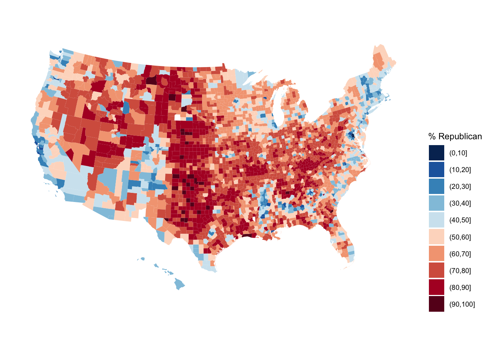
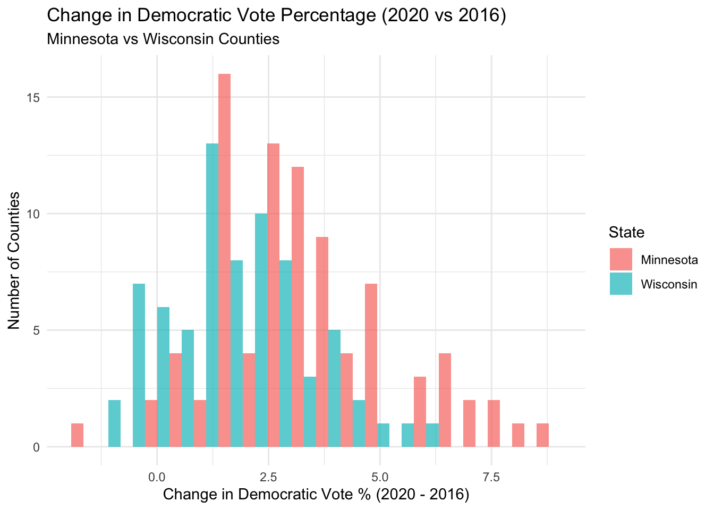
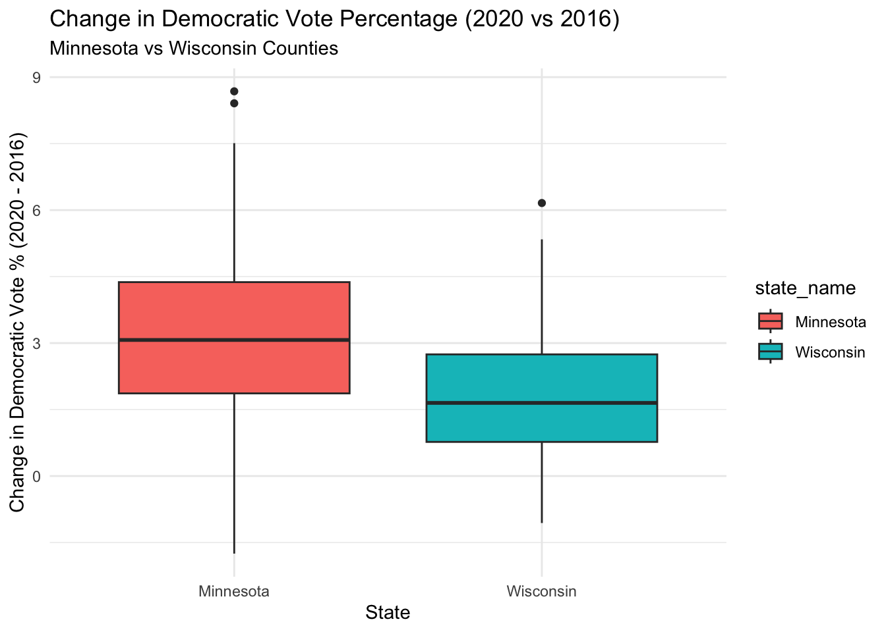
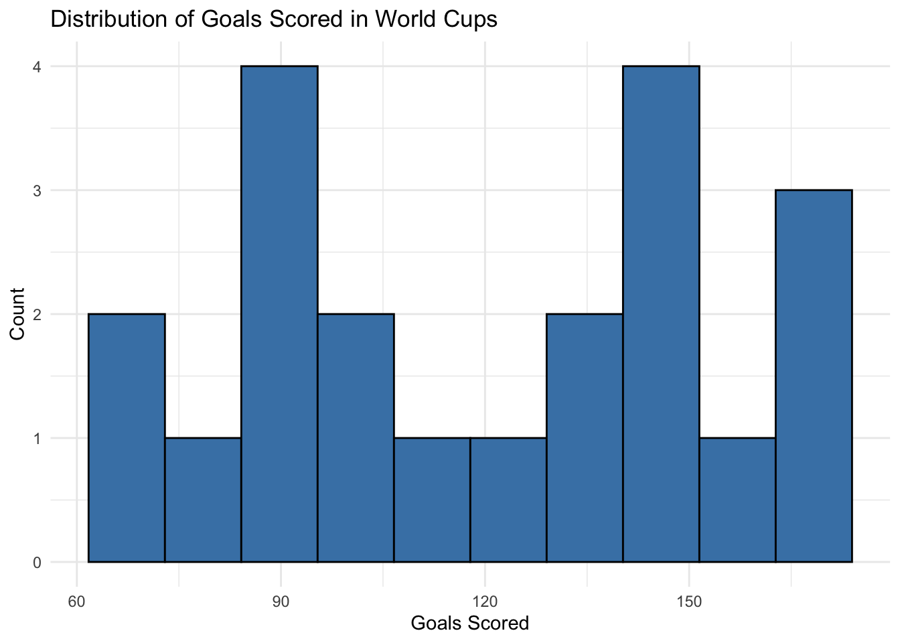
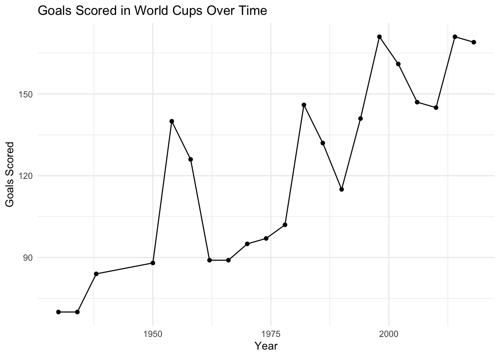
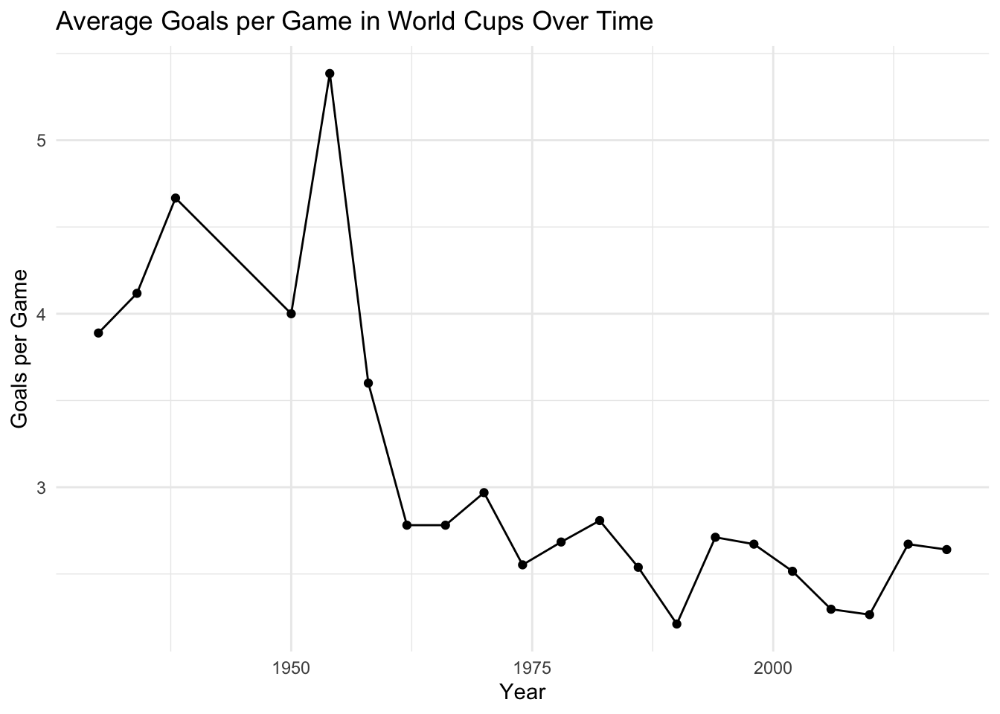

── Attaching core tidyverse packages ──────────────────────── tidyverse 2.0.0 ──
✔ dplyr 1.1.4 ✔ readr 2.1.5
✔ forcats 1.0.0 ✔ stringr 1.5.1
✔ ggplot2 3.5.2 ✔ tibble 3.2.1
✔ lubridate 1.9.4 ✔ tidyr 1.3.1
✔ purrr 1.0.4
── Conflicts ────────────────────────────────────────── tidyverse_conflicts() ──
✖ dplyr::filter() masks stats::filter()
✖ dplyr::lag() masks stats::lag()
ℹ Use the conflicted package (<http://conflicted.r-lib.org/>) to force all conflicts to become errors15 Data Wrangling
15.1 Learning Goals
Explore the following wrangling verbs: select, mutate, filter, arrange, summarize, group_by Use the native pipe operator |>
15.2 Additional Resources
For more information about the topics covered in this chapter, refer to the resources below:
- Intro to dplyr (YouTube) by Lisa Lendway
- Demonstration of dplyr (YouTube) by Lisa Lendway
- Data Transformation (html) by Wickham, Çetinkaya-Rundel, & Grolemund
- A Grammar for Data Wrangling (html) by Baumer, Kaplan, and Horton
15.3 8.1 Motivation
Recall the elections data by U.S. county:
Rows: 3,109
Columns: 25
$ state_name <chr> "Alabama", "Alabama", "Alabama", "Alabama", "Alabama…
$ state_abbr <chr> "AL", "AL", "AL", "AL", "AL", "AL", "AL", "AL", "AL"…
$ historical <chr> "red", "red", "red", "red", "red", "red", "red", "re…
$ county_name <chr> "Autauga County", "Baldwin County", "Barbour County"…
$ county_fips <int> 1001, 1003, 1005, 1007, 1009, 1011, 1013, 1015, 1017…
$ total_votes_20 <int> 27770, 109679, 10518, 9595, 27588, 4613, 9488, 50983…
$ repub_pct_20 <dbl> 71.44, 76.17, 53.45, 78.43, 89.57, 24.84, 57.53, 68.…
$ dem_pct_20 <dbl> 27.02, 22.41, 45.79, 20.70, 9.57, 74.70, 41.79, 29.8…
$ winner_20 <chr> "repub", "repub", "repub", "repub", "repub", "dem", …
$ total_votes_16 <int> 24661, 94090, 10390, 8748, 25384, 4701, 8685, 47376,…
$ repub_pct_16 <dbl> 73.44, 77.35, 52.27, 76.97, 89.85, 24.23, 56.32, 69.…
$ dem_pct_16 <dbl> 23.96, 19.57, 46.66, 21.42, 8.47, 75.09, 42.79, 27.8…
$ winner_16 <chr> "repub", "repub", "repub", "repub", "repub", "dem", …
$ total_votes_12 <int> 23909, 84988, 11459, 8391, 23980, 5318, 9483, 46240,…
$ repub_pct_12 <dbl> 72.63, 77.39, 48.34, 73.07, 86.49, 23.51, 53.58, 65.…
$ dem_pct_12 <dbl> 26.58, 21.57, 51.25, 26.22, 12.35, 76.31, 46.05, 33.…
$ winner_12 <chr> "repub", "repub", "dem", "repub", "repub", "dem", "r…
$ total_population <int> 54907, 187114, 27321, 22754, 57623, 10746, 20624, 11…
$ percent_white <int> 76, 83, 46, 75, 88, 22, 54, 73, 58, 92, 81, 56, 54, …
$ percent_black <int> 18, 9, 46, 22, 1, 71, 44, 21, 40, 5, 10, 43, 44, 15,…
$ percent_asian <int> 1, 1, 0, 0, 0, 0, 1, 1, 1, 0, 0, 0, 0, 0, 0, 1, 0, 0…
$ percent_hispanic <int> 2, 4, 5, 2, 8, 6, 1, 3, 1, 1, 8, 0, 0, 3, 2, 6, 2, 1…
$ per_capita_income <int> 24571, 26766, 16829, 17427, 20730, 18628, 17403, 208…
$ median_rent <int> 668, 693, 382, 351, 403, 276, 331, 422, 374, 375, 40…
$ median_age <dbl> 37.5, 41.5, 38.3, 39.4, 39.6, 39.6, 40.6, 38.7, 42.4…
Click to explore the full elections dataset
Let’s examine the structure and the first few rows of our election data:
Rows: 3,109
Columns: 25
$ state_name <chr> "Alabama", "Alabama", "Alabama", "Alabama", "Alabama…
$ state_abbr <chr> "AL", "AL", "AL", "AL", "AL", "AL", "AL", "AL", "AL"…
$ historical <chr> "red", "red", "red", "red", "red", "red", "red", "re…
$ county_name <chr> "Autauga County", "Baldwin County", "Barbour County"…
$ county_fips <int> 1001, 1003, 1005, 1007, 1009, 1011, 1013, 1015, 1017…
$ total_votes_20 <int> 27770, 109679, 10518, 9595, 27588, 4613, 9488, 50983…
$ repub_pct_20 <dbl> 71.44, 76.17, 53.45, 78.43, 89.57, 24.84, 57.53, 68.…
$ dem_pct_20 <dbl> 27.02, 22.41, 45.79, 20.70, 9.57, 74.70, 41.79, 29.8…
$ winner_20 <chr> "repub", "repub", "repub", "repub", "repub", "dem", …
$ total_votes_16 <int> 24661, 94090, 10390, 8748, 25384, 4701, 8685, 47376,…
$ repub_pct_16 <dbl> 73.44, 77.35, 52.27, 76.97, 89.85, 24.23, 56.32, 69.…
$ dem_pct_16 <dbl> 23.96, 19.57, 46.66, 21.42, 8.47, 75.09, 42.79, 27.8…
$ winner_16 <chr> "repub", "repub", "repub", "repub", "repub", "dem", …
$ total_votes_12 <int> 23909, 84988, 11459, 8391, 23980, 5318, 9483, 46240,…
$ repub_pct_12 <dbl> 72.63, 77.39, 48.34, 73.07, 86.49, 23.51, 53.58, 65.…
$ dem_pct_12 <dbl> 26.58, 21.57, 51.25, 26.22, 12.35, 76.31, 46.05, 33.…
$ winner_12 <chr> "repub", "repub", "dem", "repub", "repub", "dem", "r…
$ total_population <int> 54907, 187114, 27321, 22754, 57623, 10746, 20624, 11…
$ percent_white <int> 76, 83, 46, 75, 88, 22, 54, 73, 58, 92, 81, 56, 54, …
$ percent_black <int> 18, 9, 46, 22, 1, 71, 44, 21, 40, 5, 10, 43, 44, 15,…
$ percent_asian <int> 1, 1, 0, 0, 0, 0, 1, 1, 1, 0, 0, 0, 0, 0, 0, 1, 0, 0…
$ percent_hispanic <int> 2, 4, 5, 2, 8, 6, 1, 3, 1, 1, 8, 0, 0, 3, 2, 6, 2, 1…
$ per_capita_income <int> 24571, 26766, 16829, 17427, 20730, 18628, 17403, 208…
$ median_rent <int> 668, 693, 382, 351, 403, 276, 331, 422, 374, 375, 40…
$ median_age <dbl> 37.5, 41.5, 38.3, 39.4, 39.6, 39.6, 40.6, 38.7, 42.4… state_name state_abbr historical county_name county_fips total_votes_20
1 Alabama AL red Autauga County 1001 27770
2 Alabama AL red Baldwin County 1003 109679
3 Alabama AL red Barbour County 1005 10518
4 Alabama AL red Bibb County 1007 9595
5 Alabama AL red Blount County 1009 27588
6 Alabama AL red Bullock County 1011 4613
repub_pct_20 dem_pct_20 winner_20 total_votes_16 repub_pct_16 dem_pct_16
1 71.44 27.02 repub 24661 73.44 23.96
2 76.17 22.41 repub 94090 77.35 19.57
3 53.45 45.79 repub 10390 52.27 46.66
4 78.43 20.70 repub 8748 76.97 21.42
5 89.57 9.57 repub 25384 89.85 8.47
6 24.84 74.70 dem 4701 24.23 75.09
winner_16 total_votes_12 repub_pct_12 dem_pct_12 winner_12 total_population
1 repub 23909 72.63 26.58 repub 54907
2 repub 84988 77.39 21.57 repub 187114
3 repub 11459 48.34 51.25 dem 27321
4 repub 8391 73.07 26.22 repub 22754
5 repub 23980 86.49 12.35 repub 57623
6 dem 5318 23.51 76.31 dem 10746
percent_white percent_black percent_asian percent_hispanic per_capita_income
1 76 18 1 2 24571
2 83 9 1 4 26766
3 46 46 0 5 16829
4 75 22 0 2 17427
5 88 1 0 8 20730
6 22 71 0 6 18628
median_rent median_age
1 668 37.5
2 693 41.5
3 382 38.3
4 351 39.4
5 403 39.6
6 276 39.6 [1] "state_name" "state_abbr" "historical"
[4] "county_name" "county_fips" "total_votes_20"
[7] "repub_pct_20" "dem_pct_20" "winner_20"
[10] "total_votes_16" "repub_pct_16" "dem_pct_16"
[13] "winner_16" "total_votes_12" "repub_pct_12"
[16] "dem_pct_12" "winner_12" "total_population"
[19] "percent_white" "percent_black" "percent_asian"
[22] "percent_hispanic" "per_capita_income" "median_rent"
[25] "median_age" We’ve used data viz to explore some general patterns in the election outcomes. For example, a map!
# Get a background map
library(socviz)
data(county_map)
# Make a choropleth map
library(RColorBrewer) # For the color scale
library(ggthemes) # For theme_map
elections |>
mutate(county_fips = as.character(county_fips)) |>
mutate(county_fips =
ifelse(nchar(county_fips) == 4, paste0("0", county_fips), county_fips)) |>
ggplot(aes(map_id = county_fips, fill = cut(repub_pct_20, breaks = seq(0, 100, by = 10)))) +
geom_map(map = county_map) +
scale_fill_manual(values = rev(brewer.pal(10, "RdBu")), name = "% Republican") +
expand_limits(x = county_map$long, y = county_map$lat) +
theme_map() +
theme(legend.position = "right") +
coord_equal()
Consider some fairly basic follow-up questions, each of which we cannot answer precisely (or sometimes even at all) using our data viz tools:
- How many total people voted for the Democratic and Republican candidates in 2020?
- What about in each state?
- In just the state of Minnesota:
- Which counties had the highest and lowest Democratic vote in 2020?
- How did the Democratic vote in each county change from 2016 to 2020?
15.4 8.2 Goals
We really cannot do anything with data (viz, modeling, etc) unless we can wrangle the data. The following is a typical quote. I agree with the 90% – data wrangling isn’t something we have to do before we can do data science, it is data science! But let’s rethink the 10% – data wrangling is a fun and empowering puzzle!
The goals of data wrangling are to explore how to:
- Get data into the tidy shape / format we need for analysis. For example, we might want to:
- keep only certain observations
- define new variables
- reformat or “clean” existing variables
- combine various datasets
- process “string” or text data
- Numerically (not just visually) explore and summarize various characteristics of the variables in our dataset.
15.5 8.3 Tools
We’ll continue to use packages that are part of the tidyverse which share a common general grammar and structure.
15.6 8.4 Review
There are lots and lots of steps that can go into data wrangling, thus lots and lots of relevant R functions. BUT just 6 functions can get us very far. People refer to these as the 6 main wrangling verbs or functions:
- why “verbs”? in the tidyverse grammar, functions serve as action words
- the 6 verbs are all stored in the dplyr package within the tidyverse
- each verb acts on a data frame and returns a data frame
| verb | action |
|---|---|
| arrange | arrange the rows according to some column |
| filter | filter out or obtain a subset of the rows |
| select | select a subset of columns |
| mutate | mutate or create a column |
| summarize | calculate a numerical summary of a column |
| group_by | group the rows by a specified column |
15.6.1 Example 1
Which verb would help us…
keep only information about state names, county names, and the 2020 and 2016 Democratic support (not the 2012 results, demographics, etc)
get only the data on Minnesota
define a new variable which calculates the change in Democratic support from 2016 to 2020, using dem_pct_20 and dem_pct_16
sort the counties from highest to lowest Democratic support
determine the total number of votes cast across all counties
15.6.2 Example 2: Select Columns
To get a sense for the code structure, let’s explore a couple verbs together. To start, let’s simplify our dataset to include only some variables of interest. Specifically, select() only the columns relevant to state names, county names, and the 2020 and 2016 Democratic support:
Click to view the selected data
state_name county_name dem_pct_20 dem_pct_16
1 Alabama Autauga County 27.02 23.96
2 Alabama Baldwin County 22.41 19.57
3 Alabama Barbour County 45.79 46.66
4 Alabama Bibb County 20.70 21.42
5 Alabama Blount County 9.57 8.47
6 Alabama Bullock County 74.70 75.09
7 Alabama Butler County 41.79 42.79
8 Alabama Calhoun County 29.85 27.86
9 Alabama Chambers County 41.64 41.83
10 Alabama Cherokee County 13.20 14.51Let’s re-do this with the pipe function |>:
Click to confirm pipe results match
[1] TRUE state_name county_name dem_pct_20 dem_pct_16
1 Alabama Autauga County 27.02 23.96
2 Alabama Baldwin County 22.41 19.57
3 Alabama Barbour County 45.79 46.66
4 Alabama Bibb County 20.70 21.42
5 Alabama Blount County 9.57 8.47
6 Alabama Bullock County 74.70 75.09
7 Alabama Butler County 41.79 42.79
8 Alabama Calhoun County 29.85 27.86
9 Alabama Chambers County 41.64 41.83
10 Alabama Cherokee County 13.20 14.5115.6.3 Pipe Function |>
|> “passes” objects, usually datasets, to a function:
- object |> function() is the same as function(object)
15.6.4 Example 3: Filter Rows
Let’s filter() out only the rows related to Minnesota (MN):
Click to view the Minnesota data
state_name state_abbr historical county_name county_fips total_votes_20
1 Minnesota MN blue Aitkin County 27001 10025
2 Minnesota MN blue Anoka County 27003 211132
3 Minnesota MN blue Becker County 27005 19401
4 Minnesota MN blue Beltrami County 27007 24189
5 Minnesota MN blue Benton County 27009 22260
6 Minnesota MN blue Big Stone County 27011 2974
repub_pct_20 dem_pct_20 winner_20 total_votes_16 repub_pct_16 dem_pct_16
1 62.42 35.98 repub 9185 60.05 34.12
2 49.69 47.79 repub 184084 50.71 41.01
3 64.11 33.96 repub 17090 63.66 30.47
4 50.39 47.24 repub 21316 50.59 40.76
5 64.61 32.70 repub 19911 64.65 28.33
6 62.64 35.41 repub 2729 58.89 33.75
winner_16 total_votes_12 repub_pct_12 dem_pct_12 winner_12 total_population
1 repub 9109 49.76 48.44 repub 16032
2 repub 185714 50.31 47.71 repub 334027
3 repub 16329 56.37 41.82 repub 32800
4 repub 21949 43.91 53.84 dem 45021
5 repub 19521 55.58 41.87 repub 38756
6 repub 2783 49.77 48.33 repub 5209
percent_white percent_black percent_asian percent_hispanic per_capita_income
1 95 0 0 1 24939
2 85 4 4 4 30647
3 87 0 0 1 25455
4 74 1 1 2 21622
5 93 2 1 2 24453
6 98 0 0 1 26019
median_rent median_age
1 496 52.0
2 862 37.4
3 517 42.6
4 563 33.4
5 605 34.6
6 388 49.3[1] 8715.6.5 == vs =
We use a == b to check whether a matches b.
We use a = b to define that a is equal to b. We typically use = for this purpose inside a function, and <- for this purpose outside a function.
15.6.6 Example 4: Filter and Select
Let’s combine select() and filter() to create a new dataset with info about the county names, and 2020 and 2016 Democratic support among Minnesota counties.
Click to view Minnesota selected data (without pipes)
state_name county_name dem_pct_20 dem_pct_16
1 Minnesota Aitkin County 35.98 34.12
2 Minnesota Anoka County 47.79 41.01
3 Minnesota Becker County 33.96 30.47
4 Minnesota Beltrami County 47.24 40.76
5 Minnesota Benton County 32.70 28.33
6 Minnesota Big Stone County 35.41 33.75
Click to view Minnesota selected data (with pipes)
15.6.7 Reflection
Why will we typically use:
- tidyverse code
- the pipe function |>
- each verb on a new row
15.6.8 Example 5: Order of Operations
Sometimes, the order of operations matters, eg, putting on socks then shoes produces a different result than putting on shoes then socks. However, sometimes order doesn’t matter, eg, pouring cereal into a bowl then adding milk produces the same result as pouring milk into a bow then adding cereal (though one order is obviously better than the other ;)) Above (also copied below), we selected some columns and then filtered some rows:
elections |>
select(state_name, county_name, dem_pct_20, dem_pct_16) |>
filter(state_name == "Minnesota") state_name county_name dem_pct_20 dem_pct_16
1 Minnesota Aitkin County 35.98 34.12
2 Minnesota Anoka County 47.79 41.01
3 Minnesota Becker County 33.96 30.47
4 Minnesota Beltrami County 47.24 40.76
5 Minnesota Benton County 32.70 28.33
6 Minnesota Big Stone County 35.41 33.75
7 Minnesota Blue Earth County 50.84 43.38
8 Minnesota Brown County 32.48 27.54
9 Minnesota Carlton County 49.58 46.85
10 Minnesota Carver County 46.37 39.03
11 Minnesota Cass County 34.68 31.16
12 Minnesota Chippewa County 33.67 32.00
13 Minnesota Chisago County 34.15 30.92
14 Minnesota Clay County 50.74 44.57
15 Minnesota Clearwater County 26.76 26.04
16 Minnesota Cook County 65.58 56.90
17 Minnesota Cottonwood County 30.03 29.45
18 Minnesota Crow Wing County 34.17 30.88
19 Minnesota Dakota County 55.73 48.22
20 Minnesota Dodge County 33.47 29.36
21 Minnesota Douglas County 32.56 28.80
22 Minnesota Faribault County 31.98 29.27
23 Minnesota Fillmore County 37.48 35.28
24 Minnesota Freeborn County 40.96 37.92
25 Minnesota Goodhue County 41.23 36.99
26 Minnesota Grant County 35.58 31.97
27 Minnesota Hennepin County 70.46 63.82
28 Minnesota Houston County 42.42 39.42
29 Minnesota Hubbard County 34.42 30.04
30 Minnesota Isanti County 29.45 27.09
31 Minnesota Itasca County 40.61 38.12
32 Minnesota Jackson County 29.99 27.36
33 Minnesota Kanabec County 30.02 28.64
34 Minnesota Kandiyohi County 36.12 33.56
35 Minnesota Kittson County 38.12 34.83
36 Minnesota Koochiching County 38.41 36.53
37 Minnesota Lac qui Parle County 35.79 33.92
38 Minnesota Lake County 50.64 47.54
39 Minnesota Lake of the Woods County 27.87 24.80
40 Minnesota Le Sueur County 33.73 31.10
41 Minnesota Lincoln County 30.08 28.65
42 Minnesota Lyon County 35.94 31.54
43 Minnesota McLeod County 30.64 26.64
44 Minnesota Mahnomen County 48.26 44.84
45 Minnesota Marshall County 25.33 25.55
46 Minnesota Martin County 30.02 26.11
47 Minnesota Meeker County 28.58 26.17
48 Minnesota Mille Lacs County 29.98 28.65
49 Minnesota Morrison County 22.33 20.74
50 Minnesota Mower County 46.00 42.33
51 Minnesota Murray County 29.60 27.90
52 Minnesota Nicollet County 50.31 44.02
53 Minnesota Nobles County 33.65 31.81
54 Minnesota Norman County 40.80 39.11
55 Minnesota Olmsted County 54.16 45.75
56 Minnesota Otter Tail County 32.85 28.93
57 Minnesota Pennington County 35.29 32.17
58 Minnesota Pine County 33.87 33.36
59 Minnesota Pipestone County 26.44 23.58
60 Minnesota Polk County 34.88 32.06
61 Minnesota Pope County 35.27 33.46
62 Minnesota Ramsey County 71.50 65.73
63 Minnesota Red Lake County 31.47 28.86
64 Minnesota Redwood County 28.43 24.94
65 Minnesota Renville County 30.71 27.99
66 Minnesota Rice County 48.76 44.81
67 Minnesota Rock County 29.69 28.56
68 Minnesota Roseau County 25.98 23.90
69 Minnesota St. Louis County 56.64 51.92
70 Minnesota Scott County 45.52 38.31
71 Minnesota Sherburne County 32.48 27.74
72 Minnesota Sibley County 28.60 25.29
73 Minnesota Stearns County 37.58 32.38
74 Minnesota Steele County 37.47 32.77
75 Minnesota Stevens County 37.80 39.55
76 Minnesota Swift County 34.35 33.80
77 Minnesota Todd County 24.79 23.30
78 Minnesota Traverse County 35.46 35.23
79 Minnesota Wabasha County 35.78 32.86
80 Minnesota Wadena County 26.35 24.43
81 Minnesota Waseca County 33.65 29.63
82 Minnesota Washington County 53.46 46.96
83 Minnesota Watonwan County 38.20 36.49
84 Minnesota Wilkin County 29.91 27.23
85 Minnesota Winona County 49.07 43.97
86 Minnesota Wright County 34.49 29.41
87 Minnesota Yellow Medicine County 30.54 29.01Would we get the same result if we reversed select() and filter()? Think first, then try it.
Click to compare the results of different operation orders
[1] TRUE state_name county_name dem_pct_20 dem_pct_16
1 Minnesota Aitkin County 35.98 34.12
2 Minnesota Anoka County 47.79 41.01
3 Minnesota Becker County 33.96 30.47
4 Minnesota Beltrami County 47.24 40.76
5 Minnesota Benton County 32.70 28.33
6 Minnesota Big Stone County 35.41 33.7515.6.9 Example 6: Storing Results
Typically:
- We want to store our data wrangling results.
- It’s good practice to do so under a new name. We want to preserve, thus don’t want to overwrite, the original data (especially if our code contains errors!!).
# Store the results
mn <- elections |>
select(state_name, county_name, dem_pct_20, dem_pct_16) |>
filter(state_name == "Minnesota")
# Always check it out to confirm it's what you want it to be!
head(mn) state_name county_name dem_pct_20 dem_pct_16
1 Minnesota Aitkin County 35.98 34.12
2 Minnesota Anoka County 47.79 41.01
3 Minnesota Becker County 33.96 30.47
4 Minnesota Beltrami County 47.24 40.76
5 Minnesota Benton County 32.70 28.33
6 Minnesota Big Stone County 35.41 33.7515.7 8.5 Exercises
15.7.1 Exercise 1: select Practice
Use select() to create a simplified dataset that we’ll use throughout the exercises below.
- Store this dataset as elections_small.
- Only keep the following variables: state_name, county_name, total_votes_20, repub_pct_20, dem_pct_20, total_votes_16, dem_pct_16
# Define elections_small
elections_small <- elections |>
select(state_name, county_name, total_votes_20, repub_pct_20, dem_pct_20, total_votes_16, dem_pct_16)
# Check out the first 6 rows to confirm your code did what you think it did!
head(elections_small) state_name county_name total_votes_20 repub_pct_20 dem_pct_20
1 Alabama Autauga County 27770 71.44 27.02
2 Alabama Baldwin County 109679 76.17 22.41
3 Alabama Barbour County 10518 53.45 45.79
4 Alabama Bibb County 9595 78.43 20.70
5 Alabama Blount County 27588 89.57 9.57
6 Alabama Bullock County 4613 24.84 74.70
total_votes_16 dem_pct_16
1 24661 23.96
2 94090 19.57
3 10390 46.66
4 8748 21.42
5 25384 8.47
6 4701 75.0915.7.2 Exercise 2: filter Demo
Whereas select() selects certain variables or columns, filter() keeps certain units of observation or rows relative to their outcome on certain variables. To this end, we must:
Identify the variable(s) that are relevant to the filter.
Use a “logical comparison operator” to define which values of the variable to keep:
| symbol | meaning |
|---|---|
| == | equal to |
| != | not equal to |
| > | greater than |
| >= | greater than or equal to |
| < | less than |
| <= | less than or equal to |
| %in% c(???, ???) | a list of multiple values |
- Use quotes “” when specifying outcomes of interest for a categorical variable.
Click to view Hawaii counties
state_name county_name total_votes_20 repub_pct_20 dem_pct_20
1 Hawaii Hawaii County 87814 30.63 66.88
2 Hawaii Honolulu County 382114 35.66 62.51
3 Hawaii Kauai County 33497 34.58 63.36
4 Hawaii Maui County 71044 31.14 66.59
total_votes_16 dem_pct_16
1 64865 63.61
2 285683 61.48
3 26335 62.49
4 51942 64.45
Click to view Hawaii and Delaware counties
state_name county_name total_votes_20 repub_pct_20 dem_pct_20
1 Delaware Kent County 87025 47.12 51.19
2 Delaware New Castle County 287633 30.72 67.81
3 Delaware Sussex County 129352 55.07 43.82
4 Hawaii Hawaii County 87814 30.63 66.88
5 Hawaii Honolulu County 382114 35.66 62.51
6 Hawaii Kauai County 33497 34.58 63.36
7 Hawaii Maui County 71044 31.14 66.59
total_votes_16 dem_pct_16
1 74253 44.91
2 261468 62.30
3 105814 37.17
4 64865 63.61
5 285683 61.48
6 26335 62.49
7 51942 64.45
Click to view counties with >93.97% Republican vote
Click to view counties with ≥93.97% Republican vote
state_name county_name total_votes_20 repub_pct_20 dem_pct_20
1 Montana Garfield County 813 93.97 5.04
2 Texas Borden County 416 95.43 3.85
3 Texas King County 159 94.97 5.03
4 Texas Roberts County 550 96.18 3.09
total_votes_16 dem_pct_16
1 715 4.76
2 365 8.49
3 159 3.14
4 550 3.64# Check that we have one more row than the previous filter
nrow(high_repub_inclusive) - nrow(high_repub)[1] 1We can also filter with respect to 2 rules! Here, think what variables are relevant.
Click to view Texas counties with >65% Democratic vote (Method 1)
state_name county_name total_votes_20 repub_pct_20 dem_pct_20
1 Texas El Paso County 267215 31.56 66.66
2 Texas Presidio County 2217 32.52 65.99
3 Texas Travis County 610349 26.43 71.41
4 Texas Zavala County 4379 34.03 65.40
total_votes_16 dem_pct_16
1 210458 69.14
2 2203 66.18
3 462511 66.26
4 3390 77.67
Click to view Texas counties with >65% Democratic vote (Method 2)
state_name county_name total_votes_20 repub_pct_20 dem_pct_20
1 Texas El Paso County 267215 31.56 66.66
2 Texas Presidio County 2217 32.52 65.99
3 Texas Travis County 610349 26.43 71.41
4 Texas Zavala County 4379 34.03 65.40
total_votes_16 dem_pct_16
1 210458 69.14
2 2203 66.18
3 462511 66.26
4 3390 77.67[1] TRUE15.7.3 Exercise 3: arrange Demo
arrange() arranges or sorts the rows in a dataset according to a given column or variable, in ascending or descending order:
arrange(variable), arrange(desc(variable))
# Arrange the counties in elections_small from lowest to highest percentage of 2020 Republican support
# Print out just the first 6 rows
elections_small |>
arrange(repub_pct_20) |>
head() state_name county_name total_votes_20 repub_pct_20
1 District of Columbia District of Columbia 344356 5.40
2 Maryland Prince George's County 424855 8.73
3 Maryland Baltimore city 237461 10.69
4 Virginia Petersburg city 14118 11.22
5 New York New York County 694904 12.26
6 California San Francisco County 443458 12.72
dem_pct_20 total_votes_16 dem_pct_16
1 92.15 280272 92.85
2 89.26 351091 89.33
3 87.28 208980 85.44
4 87.75 13717 87.52
5 86.78 591368 87.17
6 85.27 365295 85.53# Arrange the counties in elections_small from highest to lowest percentage of 2020 Republican support
# Print out just the first 6 rows
elections_small |>
arrange(desc(repub_pct_20)) |>
head() state_name county_name total_votes_20 repub_pct_20 dem_pct_20
1 Texas Roberts County 550 96.18 3.09
2 Texas Borden County 416 95.43 3.85
3 Texas King County 159 94.97 5.03
4 Montana Garfield County 813 93.97 5.04
5 Texas Glasscock County 653 93.57 5.97
6 Nebraska Grant County 402 93.28 4.98
total_votes_16 dem_pct_16
1 550 3.64
2 365 8.49
3 159 3.14
4 715 4.76
5 602 5.65
6 394 5.0815.7.4 Exercise 4: mutate Demo
mutate() can either transform / mutate an existing variable (column), or define a new variable based on existing ones.
15.7.4.1 Part a
Click to view the difference calculation result
state_name county_name total_votes_20 repub_pct_20 dem_pct_20
1 Alabama Autauga County 27770 71.44 27.02
2 Alabama Baldwin County 109679 76.17 22.41
3 Alabama Barbour County 10518 53.45 45.79
4 Alabama Bibb County 9595 78.43 20.70
5 Alabama Blount County 27588 89.57 9.57
6 Alabama Bullock County 4613 24.84 74.70
total_votes_16 dem_pct_16 diff_20
1 24661 23.96 44.42
2 94090 19.57 53.76
3 10390 46.66 7.66
4 8748 21.42 57.73
5 25384 8.47 80.00
6 4701 75.09 -49.86This code calculated the difference between the Republican and Democratic vote percentages in 2020 for each county.
Click to view the Republican votes calculation
state_name county_name total_votes_20 repub_pct_20 dem_pct_20
1 Alabama Autauga County 27770 71.44 27.02
2 Alabama Baldwin County 109679 76.17 22.41
3 Alabama Barbour County 10518 53.45 45.79
4 Alabama Bibb County 9595 78.43 20.70
5 Alabama Blount County 27588 89.57 9.57
6 Alabama Bullock County 4613 24.84 74.70
total_votes_16 dem_pct_16 repub_votes_20
1 24661 23.96 19839
2 94090 19.57 83542
3 10390 46.66 5622
4 8748 21.42 7525
5 25384 8.47 24711
6 4701 75.09 1146This code calculated the actual number of Republican votes in 2020 for each county by multiplying the total votes by the Republican percentage and dividing by 100.
Click to view the Republican win indicator
state_name county_name total_votes_20 repub_pct_20 dem_pct_20
1 Alabama Autauga County 27770 71.44 27.02
2 Alabama Baldwin County 109679 76.17 22.41
3 Alabama Barbour County 10518 53.45 45.79
4 Alabama Bibb County 9595 78.43 20.70
5 Alabama Blount County 27588 89.57 9.57
6 Alabama Bullock County 4613 24.84 74.70
total_votes_16 dem_pct_16 repub_win_20
1 24661 23.96 TRUE
2 94090 19.57 TRUE
3 10390 46.66 TRUE
4 8748 21.42 TRUE
5 25384 8.47 TRUE
6 4701 75.09 FALSEThis code created a TRUE/FALSE indicator showing whether Republicans won each county (TRUE if the Republican percentage was greater than the Democratic percentage).
15.7.4.2 Part b
Click to view the Democratic change calculation
state_name county_name total_votes_20 repub_pct_20 dem_pct_20
1 Alabama Autauga County 27770 71.44 27.02
2 Alabama Baldwin County 109679 76.17 22.41
3 Alabama Barbour County 10518 53.45 45.79
4 Alabama Bibb County 9595 78.43 20.70
5 Alabama Blount County 27588 89.57 9.57
6 Alabama Bullock County 4613 24.84 74.70
total_votes_16 dem_pct_16 dem_change
1 24661 23.96 3.06
2 94090 19.57 2.84
3 10390 46.66 -0.87
4 8748 21.42 -0.72
5 25384 8.47 1.10
6 4701 75.09 -0.39
Click to view the Democratic improvement indicator
state_name county_name total_votes_20 repub_pct_20 dem_pct_20
1 Alabama Autauga County 27770 71.44 27.02
2 Alabama Baldwin County 109679 76.17 22.41
3 Alabama Barbour County 10518 53.45 45.79
4 Alabama Bibb County 9595 78.43 20.70
5 Alabama Blount County 27588 89.57 9.57
6 Alabama Bullock County 4613 24.84 74.70
total_votes_16 dem_pct_16 dem_improved
1 24661 23.96 TRUE
2 94090 19.57 TRUE
3 10390 46.66 FALSE
4 8748 21.42 FALSE
5 25384 8.47 TRUE
6 4701 75.09 FALSE15.7.5 Exercise 5: Pipe Series
Let’s now combine these verbs into a pipe series!
15.7.5.1 Part a
Think then Run BEFORE running the below chunk, what do you think it will produce?
Click to examine the Wisconsin Democratic counties
# This code found Wisconsin counties where Democrats won in 2020,
# then sorted them by total votes (largest first)
wi_dem_counties state_name county_name total_votes_20 repub_pct_20 dem_pct_20
1 Wisconsin Milwaukee County 458971 29.27 69.13
2 Wisconsin Dane County 344791 22.85 75.46
3 Wisconsin Rock County 85360 43.51 54.66
4 Wisconsin La Crosse County 67884 42.25 55.75
5 Wisconsin Eau Claire County 58275 43.49 54.26
6 Wisconsin Portage County 40603 47.53 50.31
total_votes_16 dem_pct_16
1 434970 66.44
2 304729 71.38
3 75043 52.42
4 62785 51.61
5 54080 50.43
6 38123 48.5915.7.5.2 Part b
Think then Run BEFORE trying, what do you think will happen if you change the order of filter and arrange:
- the results will be the same
- we’ll get an error
- we won’t get an error, but the results will be different
Click to compare the results of different operation orders
# Are the results the same when we change the order?
identical(wi_dem_counties, wi_dem_counties_reordered)[1] TRUE state_name county_name total_votes_20 repub_pct_20 dem_pct_20
1 Wisconsin Milwaukee County 458971 29.27 69.13
2 Wisconsin Dane County 344791 22.85 75.46
3 Wisconsin Rock County 85360 43.51 54.66
4 Wisconsin La Crosse County 67884 42.25 55.75
5 Wisconsin Eau Claire County 58275 43.49 54.26
6 Wisconsin Portage County 40603 47.53 50.31
total_votes_16 dem_pct_16
1 434970 66.44
2 304729 71.38
3 75043 52.42
4 62785 51.61
5 54080 50.43
6 38123 48.5915.7.5.3 Part c
So the order of filter() and arrange() did not matter – rerranging them produces the same results. BUT what is one advantage of filtering before arranging?
Answer: Filtering before arranging is more efficient because the computer only has to sort the filtered data (which is smaller) rather than arranging all the data and then filtering it.
15.7.5.4 Part d
Think then Run BEFORE running the below chunk, what do you think it will produce?
Click to examine the Delaware Republican win analysis
15.7.5.5 Part e
Think then Run BEFORE trying, what do you think will happen if you change the order of mutate and select:
- the results will be the same
- we’ll get an error
- we won’t get an error, but the results will be different
Click to compare the results with different mutate/select order
county_name repub_pct_20 dem_pct_20 repub_win_20
1 Kent County 47.12 51.19 FALSE
2 New Castle County 30.72 67.81 FALSE
3 Sussex County 55.07 43.82 TRUE[1] TRUE15.7.6 Exercise 6: DIY Pipe Series
We’ve now learned 4 of the 6 wrangling verbs: select, filter, mutate, arrange. Let’s practice combining these into pipe series. Here are some hot tips:
- Before writing any code, translate the prompt: how many distinct wrangling steps are needed and what verb do we need in each step?
- Add each verb one at a time – don’t try writing a whole chunk at once.
15.7.6.1 Part a
Show just the counties in Minnesota and their Democratic 2020 vote percentage, from highest to lowest. Your answer should have just 2 columns.
Click to view Minnesota counties sorted by Democratic vote
county_name dem_pct_20
1 Ramsey County 71.50
2 Hennepin County 70.46
3 Cook County 65.58
4 St. Louis County 56.64
5 Dakota County 55.73
6 Olmsted County 54.16
7 Washington County 53.46
8 Blue Earth County 50.84
9 Clay County 50.74
10 Lake County 50.64
11 Nicollet County 50.31
12 Carlton County 49.58
13 Winona County 49.07
14 Rice County 48.76
15 Mahnomen County 48.26
16 Anoka County 47.79
17 Beltrami County 47.24
18 Carver County 46.37
19 Mower County 46.00
20 Scott County 45.52
21 Houston County 42.42
22 Goodhue County 41.23
23 Freeborn County 40.96
24 Norman County 40.80
25 Itasca County 40.61
26 Koochiching County 38.41
27 Watonwan County 38.20
28 Kittson County 38.12
29 Stevens County 37.80
30 Stearns County 37.58
31 Fillmore County 37.48
32 Steele County 37.47
33 Kandiyohi County 36.12
34 Aitkin County 35.98
35 Lyon County 35.94
36 Lac qui Parle County 35.79
37 Wabasha County 35.78
38 Grant County 35.58
39 Traverse County 35.46
40 Big Stone County 35.41
41 Pennington County 35.29
42 Pope County 35.27
43 Polk County 34.88
44 Cass County 34.68
45 Wright County 34.49
46 Hubbard County 34.42
47 Swift County 34.35
48 Crow Wing County 34.17
49 Chisago County 34.15
50 Becker County 33.96
51 Pine County 33.87
52 Le Sueur County 33.73
53 Chippewa County 33.67
54 Nobles County 33.65
55 Waseca County 33.65
56 Dodge County 33.47
57 Otter Tail County 32.85
58 Benton County 32.70
59 Douglas County 32.56
60 Brown County 32.48
61 Sherburne County 32.48
62 Faribault County 31.98
63 Red Lake County 31.47
64 Renville County 30.71
65 McLeod County 30.64
66 Yellow Medicine County 30.54
67 Lincoln County 30.08
68 Cottonwood County 30.03
69 Kanabec County 30.02
70 Martin County 30.02
71 Jackson County 29.99
72 Mille Lacs County 29.98
73 Wilkin County 29.91
74 Rock County 29.69
75 Murray County 29.60
76 Isanti County 29.45
77 Sibley County 28.60
78 Meeker County 28.58
79 Redwood County 28.43
80 Lake of the Woods County 27.87
81 Clearwater County 26.76
82 Pipestone County 26.44
83 Wadena County 26.35
84 Roseau County 25.98
85 Marshall County 25.33
86 Todd County 24.79
87 Morrison County 22.3315.7.6.2 Part b
Create a new dataset named mn_wi that sorts the counties in Minnesota and Wisconsin from lowest to highest in terms of the change in Democratic vote percentage in 2020 vs 2016. This dataset should include the following variables (and only these variables): state_name, county_name, dem_pct_20, dem_pct_16, and a variable measuring the change in Democratic vote percentage in 2020 vs 2016.
# Define the dataset
# Only store the results once you're confident that they're correct
mn_wi <- elections_small |>
filter(state_name %in% c("Minnesota", "Wisconsin")) |>
mutate(dem_change = dem_pct_20 - dem_pct_16) |>
select(state_name, county_name, dem_pct_20, dem_pct_16, dem_change) |>
arrange(dem_change)
# Check out the first 6 rows to confirm your results
head(mn_wi) state_name county_name dem_pct_20 dem_pct_16 dem_change
1 Minnesota Stevens County 37.80 39.55 -1.75
2 Wisconsin Forest County 34.06 35.12 -1.06
3 Wisconsin Kewaunee County 32.87 33.73 -0.86
4 Wisconsin Clark County 30.37 31.19 -0.82
5 Wisconsin Adams County 36.63 37.40 -0.77
6 Wisconsin Trempealeau County 40.86 41.57 -0.71
Click to explore the full MN/WI dataset
[1] 159
Minnesota Wisconsin
87 72 state_name county_name dem_pct_20 dem_pct_16 dem_change
1 Minnesota Stevens County 37.80 39.55 -1.75
2 Wisconsin Forest County 34.06 35.12 -1.06
3 Wisconsin Kewaunee County 32.87 33.73 -0.86
4 Wisconsin Clark County 30.37 31.19 -0.82
5 Wisconsin Adams County 36.63 37.40 -0.77
6 Wisconsin Trempealeau County 40.86 41.57 -0.71
7 Wisconsin Lafayette County 42.63 43.25 -0.62
8 Wisconsin Oconto County 28.93 29.54 -0.61
9 Wisconsin Richland County 44.32 44.93 -0.61
10 Wisconsin Juneau County 34.62 34.94 -0.32 state_name county_name dem_pct_20 dem_pct_16 dem_change
150 Minnesota Beltrami County 47.24 40.76 6.48
151 Minnesota Washington County 53.46 46.96 6.50
152 Minnesota Hennepin County 70.46 63.82 6.64
153 Minnesota Anoka County 47.79 41.01 6.78
154 Minnesota Scott County 45.52 38.31 7.21
155 Minnesota Carver County 46.37 39.03 7.34
156 Minnesota Blue Earth County 50.84 43.38 7.46
157 Minnesota Dakota County 55.73 48.22 7.51
158 Minnesota Olmsted County 54.16 45.75 8.41
159 Minnesota Cook County 65.58 56.90 8.6815.7.6.3 Part c
Construct and discuss a plot of the county-level change in Democratic vote percent in 2020 vs 2016, and how this differs between Minnesota and Wisconsin.
ggplot(mn_wi, aes(x = dem_change, fill = state_name)) +
geom_histogram(position = "dodge", alpha = 0.7, bins = 20) +
labs(title = "Change in Democratic Vote Percentage (2020 vs 2016)",
subtitle = "Minnesota vs Wisconsin Counties",
x = "Change in Democratic Vote % (2020 - 2016)",
y = "Number of Counties",
fill = "State") +
theme_minimal()
# Another visualization option: boxplot
ggplot(mn_wi, aes(x = state_name, y = dem_change, fill = state_name)) +
geom_boxplot() +
labs(title = "Change in Democratic Vote Percentage (2020 vs 2016)",
subtitle = "Minnesota vs Wisconsin Counties",
x = "State",
y = "Change in Democratic Vote % (2020 - 2016)") +
theme_minimal()
15.7.7 Exercise 7: summarize Demo
6 verbs: select, filter, arrange, mutate, summarize, group_by
Let’s talk about the last 2 verbs. summarize() (or equivalently summarise()) takes an entire data frame as input and outputs a single row with one or more summary statistics. For each chunk below, indicate what the code does.
Click to view the simple median calculation
Click to view the named median calculation
15.7.8 Exercise 8: summarize + group_by demo
Finally, group_by() groups the units of observation or rows of a data frame by a specified set of variables. Alone, this function doesn’t change the appearance of our dataset or seem to do anything at all:
Click to view the grouped data (looks the same, but structure is different)
# A tibble: 6 × 7
# Groups: state_name [1]
state_name county_name total_votes_20 repub_pct_20 dem_pct_20 total_votes_16
<chr> <chr> <int> <dbl> <dbl> <int>
1 Alabama Autauga Coun… 27770 71.4 27.0 24661
2 Alabama Baldwin Coun… 109679 76.2 22.4 94090
3 Alabama Barbour Coun… 10518 53.4 45.8 10390
4 Alabama Bibb County 9595 78.4 20.7 8748
5 Alabama Blount County 27588 89.6 9.57 25384
6 Alabama Bullock Coun… 4613 24.8 74.7 4701
# ℹ 1 more variable: dem_pct_16 <dbl>Though it does change the underlying structure of the dataset:
[1] "data.frame"[1] "grouped_df" "tbl_df" "tbl" "data.frame"Where it really shines is in partnership with summarize().
Click to view the grouped summary statistics
# This calculates the median Republican percentage and total votes for each state
head(state_summaries, 10)# A tibble: 10 × 3
state_name median_repub total_votes
<chr> <dbl> <int>
1 Alabama 70.6 2323304
2 Arizona 57.9 3387326
3 Arkansas 72.1 1219069
4 California 44.8 17495906
5 Colorado 56.2 3256953
6 Connecticut 41.0 1824280
7 Delaware 47.1 504010
8 District of Columbia 5.4 344356
9 Florida 64.6 11067456
10 Georgia 68 4997716[1] 5015.7.8.1 Reflect
Notice that group_by() with summarize() produces new data frame or tibble! But the units of observation are now states instead of counties within states.
15.7.9 Exercise 9: DIY
Let’s practice (some of) our 6 verbs: select, filter, arrange, mutate, summarize, group_by Remember:
- Before writing any code, translate the given prompts: how many distinct wrangling steps are needed and what verb do we need in each step?
- Add each verb one at a time.
15.7.9.1 Part a
NOTE: Part a is a challenge exercise. If you get really stuck, move on to Part b which is the same overall question, but with hints.
Click to view states sorted by total votes
# A tibble: 50 × 2
state_name total_state_votes
<chr> <int>
1 California 17495906
2 Texas 11317911
3 Florida 11067456
4 New York 8616205
5 Pennsylvania 6925255
6 Illinois 6038850
7 Ohio 5922202
8 Michigan 5539302
9 North Carolina 5524801
10 Georgia 4997716
# ℹ 40 more rows# In 2020, what were the total number of votes for the Democratic candidate and the total number of votes for the Republican candidate in each *state*?
state_party_votes <- elections_small |>
mutate(dem_votes_20 = total_votes_20 * dem_pct_20/100,
repub_votes_20 = total_votes_20 * repub_pct_20/100) |>
group_by(state_name) |>
summarize(total_dem_votes = sum(dem_votes_20),
total_repub_votes = sum(repub_votes_20))
Click to view Democratic and Republican votes by state
# A tibble: 10 × 3
state_name total_dem_votes total_repub_votes
<chr> <dbl> <dbl>
1 Alabama 849665. 1441153.
2 Arizona 1672126. 1661672.
3 Arkansas 423919. 760639.
4 California 11109643. 6006034.
5 Colorado 1804395. 1364625.
6 Connecticut 1080677. 715315.
7 Delaware 296274. 200601.
8 District of Columbia 317324. 18595.
9 Florida 5297129. 5668599.
10 Georgia 2473656. 2461871.# Check total votes
state_party_votes |>
summarize(total_dem = sum(total_dem_votes),
total_repub = sum(total_repub_votes),
difference = sum(total_repub_votes) - sum(total_dem_votes))# A tibble: 1 × 3
total_dem total_repub difference
<dbl> <dbl> <dbl>
1 81060256. 73978757. -7081500.# What states did the Democratic candidate win in 2020?
dem_win_states <- elections_small |>
mutate(dem_votes_20 = total_votes_20 * dem_pct_20/100,
repub_votes_20 = total_votes_20 * repub_pct_20/100) |>
group_by(state_name) |>
summarize(total_dem_votes = sum(dem_votes_20),
total_repub_votes = sum(repub_votes_20)) |>
filter(total_dem_votes > total_repub_votes) |>
arrange(desc(total_dem_votes))
Click to view states won by Democrats
# A tibble: 26 × 3
state_name total_dem_votes total_repub_votes
<chr> <dbl> <dbl>
1 California 11109643. 6006034.
2 New York 5243939. 3250124.
3 Illinois 3471918. 2446930.
4 Pennsylvania 3459872. 3378227.
5 Michigan 2804110. 2649813.
6 New Jersey 2608345. 1883300.
7 Georgia 2473656. 2461871.
8 Virginia 2413537. 1962449.
9 Massachusetts 2382218. 1167207.
10 Washington 2369591. 1584711.
# ℹ 16 more rows[1] 2615.7.9.2 Part b
Click to view states by total votes (with hint)
# A tibble: 10 × 2
state_name total_state_votes
<chr> <int>
1 California 17495906
2 Texas 11317911
3 Florida 11067456
4 New York 8616205
5 Pennsylvania 6925255
6 Illinois 6038850
7 Ohio 5922202
8 Michigan 5539302
9 North Carolina 5524801
10 Georgia 4997716# In 2020, what were the total number of votes for the Democratic candidate and the total number of votes for the Republican candidate in each state?
# HINT: First calculate the number of Dem and Repub votes in each *county*
# Then group and summarize these by state
state_party_votes_hint <- elections_small |>
mutate(dem_votes_20 = total_votes_20 * dem_pct_20/100,
repub_votes_20 = total_votes_20 * repub_pct_20/100) |>
group_by(state_name) |>
summarize(total_dem_votes = sum(dem_votes_20),
total_repub_votes = sum(repub_votes_20))
Click to view party votes by state (with hint)
# A tibble: 10 × 3
state_name total_dem_votes total_repub_votes
<chr> <dbl> <dbl>
1 Alabama 849665. 1441153.
2 Arizona 1672126. 1661672.
3 Arkansas 423919. 760639.
4 California 11109643. 6006034.
5 Colorado 1804395. 1364625.
6 Connecticut 1080677. 715315.
7 Delaware 296274. 200601.
8 District of Columbia 317324. 18595.
9 Florida 5297129. 5668599.
10 Georgia 2473656. 2461871.# What states did the Democratic candidate win in 2020?
# HINT: Start with the results from the previous chunk, and then keep only some rows
dem_win_states_hint <- elections_small |>
mutate(dem_votes_20 = total_votes_20 * dem_pct_20/100,
repub_votes_20 = total_votes_20 * repub_pct_20/100) |>
group_by(state_name) |>
summarize(total_dem_votes = sum(dem_votes_20),
total_repub_votes = sum(repub_votes_20)) |>
filter(total_dem_votes > total_repub_votes)
Click to view states won by Democrats (with hint)
# A tibble: 26 × 3
state_name total_dem_votes total_repub_votes
<chr> <dbl> <dbl>
1 Arizona 1672126. 1661672.
2 California 11109643. 6006034.
3 Colorado 1804395. 1364625.
4 Connecticut 1080677. 715315.
5 Delaware 296274. 200601.
6 District of Columbia 317324. 18595.
7 Georgia 2473656. 2461871.
8 Hawaii 366121. 196866.
9 Illinois 3471918. 2446930.
10 Maine 430466. 359898.
# ℹ 16 more rows[1] FALSE15.7.10 Exercise 10: Practice on New Data
Recall the World Cup football/soccer data from TidyTuesday:
Click to explore the World Cup dataset
Rows: 21
Columns: 10
$ year <int> 1930, 1934, 1938, 1950, 1954, 1958, 1962, 1966, 1970, 197…
$ host <chr> "Uruguay", "Italy", "France", "Brazil", "Switzerland", "S…
$ winner <chr> "Uruguay", "Italy", "Italy", "Uruguay", "West Germany", "…
$ second <chr> "Argentina", "Czechoslovakia", "Hungary", "Brazil", "Hung…
$ third <chr> "USA", "Germany", "Brazil", "Sweden", "Austria", "France"…
$ fourth <chr> "Yugoslavia", "Austria", "Sweden", "Spain", "Uruguay", "W…
$ goals_scored <int> 70, 70, 84, 88, 140, 126, 89, 89, 95, 97, 102, 146, 132, …
$ teams <int> 13, 16, 15, 13, 16, 16, 16, 16, 16, 16, 16, 24, 24, 24, 2…
$ games <int> 18, 17, 18, 22, 26, 35, 32, 32, 32, 38, 38, 52, 52, 52, 5…
$ attendance <int> 434000, 395000, 483000, 1337000, 943000, 868000, 776000, … year host winner second third fourth
1 1930 Uruguay Uruguay Argentina USA Yugoslavia
2 1934 Italy Italy Czechoslovakia Germany Austria
3 1938 France Italy Hungary Brazil Sweden
4 1950 Brazil Uruguay Brazil Sweden Spain
5 1954 Switzerland West Germany Hungary Austria Uruguay
6 1958 Sweden Brazil Sweden France West Germany
goals_scored teams games attendance
1 70 13 18 434000
2 70 16 17 395000
3 84 15 18 483000
4 88 13 22 1337000
5 140 16 26 943000
6 126 16 35 868000 year host winner second
Min. :1930 Length:21 Length:21 Length:21
1st Qu.:1958 Class :character Class :character Class :character
Median :1978 Mode :character Mode :character Mode :character
Mean :1977
3rd Qu.:1998
Max. :2018
third fourth goals_scored teams
Length:21 Length:21 Min. : 70.0 Min. :13.00
Class :character Class :character 1st Qu.: 89.0 1st Qu.:16.00
Mode :character Mode :character Median :126.0 Median :16.00
Mean :121.3 Mean :21.76
3rd Qu.:146.0 3rd Qu.:32.00
Max. :171.0 Max. :32.00
games attendance
Min. :17.00 Min. : 395000
1st Qu.:32.00 1st Qu.: 943000
Median :38.00 Median :1774022
Mean :42.86 Mean :1898122
3rd Qu.:64.00 3rd Qu.:2724604
Max. :64.00 Max. :3568567 You can find a codebook here. Use (some of) our 6 verbs (select, filter, arrange, mutate, summarize, group_by) and data viz to address the following prompts.
Click to view Brazil’s World Cup wins
Click to view World Cups with highest attendance
# Construct a univariate plot of goals_scored (no wrangling necessary)
# This provides a visual summary of how the number of goals_scored varies from World Cup to World Cup
ggplot(world_cup, aes(x = goals_scored)) +
geom_histogram(bins = 10, fill = "steelblue", color = "black") +
labs(title = "Distribution of Goals Scored in World Cups",
x = "Goals Scored",
y = "Count") +
theme_minimal()
# Let's follow up the plot with some more precise numerical summaries
# Calculate the min, median, and max number of goals_scored across all World Cups
# NOTE: Visually compare these numerical summaries to what you observed in the plot
goals_summary <- world_cup |>
summarize(min_goals = min(goals_scored),
median_goals = median(goals_scored),
max_goals = max(goals_scored))
Click to view goals scored summary statistics
# Construct a bivariate plot of how the number of goals_scored in the World Cup has changed over the years
# No wrangling necessary
ggplot(world_cup, aes(x = year, y = goals_scored)) +
geom_point() +
geom_line() +
labs(title = "Goals Scored in World Cups Over Time",
x = "Year",
y = "Goals Scored") +
theme_minimal()
# Our above summaries might be a bit misleading.
# The number of games played at the World Cup varies.
# Construct a bivariate plot of how the typical number of goals per game has changed over the years
world_cup |>
mutate(goals_per_game = goals_scored / games) |>
ggplot(aes(x = year, y = goals_per_game)) +
geom_point() +
geom_line() +
labs(title = "Average Goals per Game in World Cups Over Time",
x = "Year",
y = "Goals per Game") +
theme_minimal()
15.7.11 Exercise 11: Practice on Your Own Data
Return to the TidyTuesday data you’re using in Homework 3. Use your new wrangling skills to play around. What new insights can you gain?!
Summary of Key Data Wrangling Verbs
Here’s a quick reference of the verbs we’ve learned:
- select() - Choose specific columns
- filter() - Choose specific rows based on conditions
- arrange() - Sort rows by values in columns
- mutate() - Create new columns or modify existing ones
- summarize() - Calculate summary statistics
- group_by() - Group rows by values in columns (typically used with summarize)
Remember that you can combine these verbs with the pipe operator |> to create powerful data wrangling workflows!